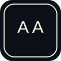

<nav class="nav-solid" aria-label="Main Navigation">
  <style>
    :root {
      --nav-hover-1: #e890be;
      --nav-hover-2: #9ad7ff;
      --nav-hover-3: #73ffa0;
      --nav-hover-4: #f7c948;
      --nav-hover-5: #ff9f80;
      --nav-hover-6: #c77dff;
      --nav-hover-7: #8be4c5;
      --nav-hover-8: #b6f5d1;
      --nav-hover-9: #7fe7ff;
    }

    .nav-links > li:nth-child(1) > a:hover,
    .nav-links > li:nth-child(1) > a:focus { color: var(--nav-hover-1); }
    .nav-links > li:nth-child(1) > a:hover::after,
    .nav-links > li:nth-child(1) > a:focus::after { background: var(--nav-hover-1); }

    .nav-links > li:nth-child(2) > a:hover,
    .nav-links > li:nth-child(2) > a:focus { color: var(--nav-hover-2); }
    .nav-links > li:nth-child(2) > a:hover::after,
    .nav-links > li:nth-child(2) > a:focus::after { background: var(--nav-hover-2); }

    .nav-links > li:nth-child(3) > a:hover,
    .nav-links > li:nth-child(3) > a:focus { color: var(--nav-hover-3); }
    .nav-links > li:nth-child(3) > a:hover::after,
    .nav-links > li:nth-child(3) > a:focus::after { background: var(--nav-hover-3); }

    .nav-links > li:nth-child(4) > a:hover,
    .nav-links > li:nth-child(4) > a:focus { color: var(--nav-hover-4); }
    .nav-links > li:nth-child(4) > a:hover::after,
    .nav-links > li:nth-child(4) > a:focus::after { background: var(--nav-hover-4); }

    .nav-links > li:nth-child(5) > a:hover,
    .nav-links > li:nth-child(5) > a:focus { color: var(--nav-hover-5); }
    .nav-links > li:nth-child(5) > a:hover::after,
    .nav-links > li:nth-child(5) > a:focus::after { background: var(--nav-hover-5); }

    .nav-links > li:nth-child(6) > a:hover,
    .nav-links > li:nth-child(6) > a:focus { color: var(--nav-hover-6); }
    .nav-links > li:nth-child(6) > a:hover::after,
    .nav-links > li:nth-child(6) > a:focus::after { background: var(--nav-hover-6); }

    .nav-links > li:nth-child(7) > a:hover,
    .nav-links > li:nth-child(7) > a:focus { color: var(--nav-hover-7); }
    .nav-links > li:nth-child(7) > a:hover::after,
    .nav-links > li:nth-child(7) > a:focus::after { background: var(--nav-hover-7); }

    .nav-links > li:nth-child(8) > a:hover,
    .nav-links > li:nth-child(8) > a:focus { color: var(--nav-hover-8); }
    .nav-links > li:nth-child(8) > a:hover::after,
    .nav-links > li:nth-child(8) > a:focus::after { background: var(--nav-hover-8); }

    .nav-links > li:nth-child(9) > a:hover,
    .nav-links > li:nth-child(9) > a:focus { color: var(--nav-hover-9); }
    .nav-links > li:nth-child(9) > a:hover::after,
    .nav-links > li:nth-child(9) > a:focus::after { background: var(--nav-hover-9); }
  </style>
  <div class="nav-content">
    <a href="index.html" class="logo-link">
      
      <span class="full-name">Placeholder Name</span>
    </a>
    <ul class="nav-links">
      <li><a href="index.html#about">About</a></li>
      <li><a href="secondary.html">Features</a></li>
      <li><a href="about.html">Bio</a></li>
      <li><a href="#">Section</a></li>
      <li><a href="#">Section</a></li>
      <li class="dropdown">
        <a href="#" class="dropdown-toggle">More <span class="caret">▾</span></a>
        <ul class="dropdown-menu">
          <li><a href="secondary.html">Secondary Page</a></li>
          <li><a href="#">Placeholder Link</a></li>
          <li><a href="#">Placeholder Link</a></li>
        </ul>
      </li>
      <li class="dropdown">
        <a href="#" class="dropdown-toggle">Resources <span class="caret">▾</span></a>
        <ul class="dropdown-menu">
          <li><a href="#">Placeholder Link</a></li>
          <li><a href="#">Placeholder Link</a></li>
        </ul>
      </li>
      <li><a href="#">CV</a></li>
      <li><a href="index.html#contact">Contact</a></li>
    </ul>
  </div>
</nav>
